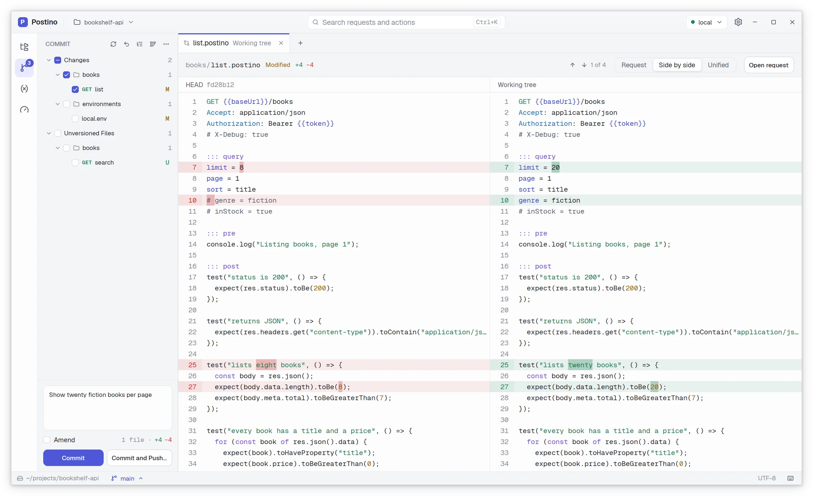
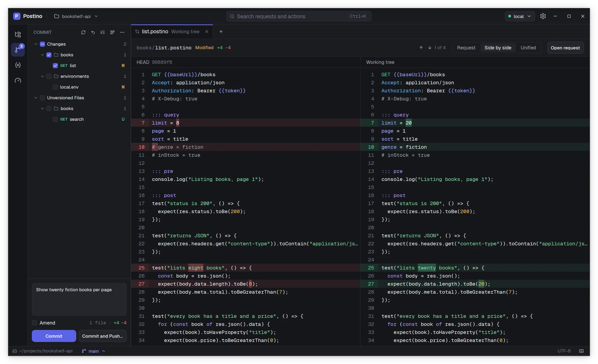

Source Control, next to your requests
See what changed since the last commit, request by request, and read each change side by side, unified, or grouped by part of the request. Pick what goes in, write the message and commit, or commit and push.
- Stage a whole file or a single block of changes
- Branches, push, pull and a log with its commit graph
- Secrets live in a
.local.envfile, kept out of every commit by default

